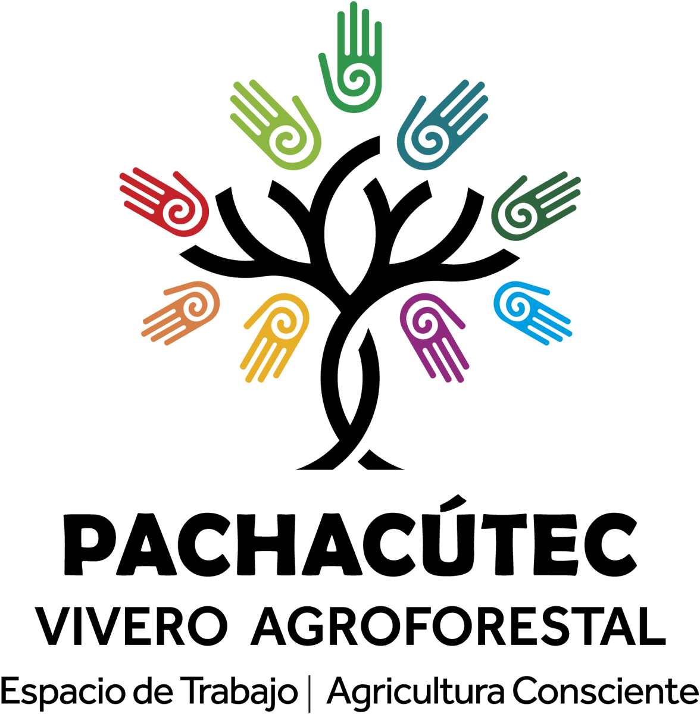

<!--Animacion logo-->
<div class="logo fixed-top">
  <!---->
  
</div>

<!--Nota presentacion-->
<div class="contenedora">
  <h2 class="m-3">Pachacútec Agroforestal</h2>
  <div class="presentacion">
    Pachacútec es un Vivero Agroforestal que está naciendo de la comunión de quienes amamos al monte y sabemos que para
    crecer es necesario nutrirse de su presencia.
  </div><br>
  <div class="contiene-youtube">
    <!--<iframe width="90%" height="315" src="https://www.youtube.com/embed/sCBgcx8O-JM" title="YouTube video player" frameborder="0" allow="accelerometer; autoplay; clipboard-write; encrypted-media; gyroscope; picture-in-picture; web-share" allowfullscreen></iframe>-->
    <iframe class="intro_youtube" src="https://www.youtube.com/embed/sCBgcx8O-JM" title="YouTube video player"
      frameborder="0"
      allow="accelerometer; autoplay; clipboard-write; encrypted-media; gyroscope; picture-in-picture; web-share"
      allowfullscreen></iframe>
  </div>

  <br>
<br><br>

<!--Enlaces al sitio-->
<div class="produccion">
  <app-cards-links></app-cards-links>
  </div>

<!--ubicacion-->
<h2>Nuestro vivero</h2><br>
<div class="ubicacion">
<iframe style="width:100%; height:450px;" src="https://www.google.com/maps/embed?pb=!1m18!1m12!1m3!1d3390.460006848375!2d-64.43036841961984!3d-31.812463607252656!2m3!1f0!2f0!3f0!3m2!1i1024!2i768!4f13.1!3m3!1m2!1s0x95d2abc8b668cadb%3A0x5e93d80f4af76d8c!2svivero%20agroforestal%20pachac%C3%BAtec!5e0!3m2!1ses!2sar!4v1694096991664!5m2!1ses!2sar" allowfullscreen="" loading="lazy" referrerpolicy="no-referrer-when-downgrade"></iframe>
</div>


<br><br><br>


</div>
<br><br>
